Video-presentacion Valladolid
Si el video no se reproduce correctamente pulse aqui
- Localizacion
- Localidades principales
- Geografia de la provincia
- Historia
- Cultura
- Naturaleza
- Tradiciones
- Otros aspectos de interes
LOCALIZACION
Está situada en el centro de la Meseta Norte (mitad superior de la meseta Ibérica) y limita con las provincias de León y Palencia al norte, Burgos al este, Segovia y Ávila al sur, Salamanca al suroeste y Zamora al oeste.
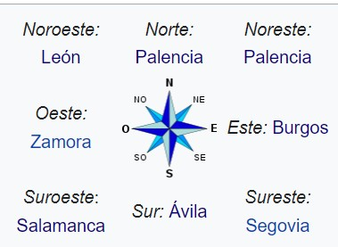Mapa
Si el mapa superior no funciona haga click aqui
Ir arriba
LOCALIDADES PRINCIPALES
- Valladolid ---> 299 265 habitantes
- Laguna de Duero ---> 22 765 habitantes
- Arroyo de la Encomienda ---> 20 537 habitantes
- Medina del Campo ---> 20 416 habitantes
- La Cistérniga ---> 9016 habitantes
- Tordesillas ---> 8745 habitantes
- Tudela de Duero ---> 8620 habitantes
- Íscar ---> 6341 habitantes
- Zaratán ---> 6235 habitantes
- Aldeamayor de San Martín ---> 5634 habitantes
- Cigales ---> 5328 habitantes
- Simancas ---> 5267 habitantes
- Peñafiel ---> 5054 habitantes
- Medina de Rioseco ---> 4606 habitantes
- Santovenia de Pisuerga ---> 4604 habitantes
- Boecillo ---> 4148 habitantes
- Renedo de Esgueva ---> 3814 habitantes
- Cabezón de Pisuerga ---> 3763 habitantes
- Olmedo ---> 3646 habitantes
- Pedrajas de San Esteban ---> 3314 habitantes
Ir arriba
GEOGRAFIA
Está dominada por una extensa llanura en la que se distinguen: una zona de páramos calizos definidos por los valles de diferentes ríos, algunos de los cuales destacan en altitud originando un paisaje montañoso de cerros testigos, una zona de campiña, de suaves lomas y separando una y otra, las denominadas «cuestas», profundos barrancos con laderas escarpadas.
Es la única provincia peninsular que carece absolutamente de montañas y también la que menos superficie arbolada tiene (menos del 16 % del territorio). El punto más alto está en Castrillo de Duero y es el cerro de Cuchillejo (932 m). El punto más bajo es el río Duero a su paso por Villafranca de Duero (626 m). Por ello, también se trata de la única provincia de Castilla y León que no alcanza los 1000 m de altura sobre el nivel del mar en ningún punto de su territorio.
Clima
La provincia de Valladolid tiene el clima más confortable de toda la meseta norte una temperatura media anual de 11,8Cº. Sus precipitaciones medias anuales oscilan entre 400 y 600 milímetros anuales, distribuidos a lo largo de todo el año con un mínimo bastante fuerte en verano y otro invernal muy atenuado.Las precipitaciones no suelen llegar en gran cantidad y de manera torrencial, las precipitaciones en la provincia de Valladolid llegan de una manera suave y a lo largo de varios días lo que favorece al campo.
Si el widget superior no funciona haga click aqui
Ir arriba
HISTORIA
La primera población estable que se asentó en la actual provincia corresponde al pueblo prerromano de los vacceos, que fueron pobladores de cultura muy avanzada y, como el resto de los pueblos célticos, llegaron a la península procedentes del norte de Europa. Ya entonces era definida por las crónicas como una región "libre y descubierta" y "un país abierto, de trigales, tierra desarbolada". Los vacceos se dedicaban a la ganadería y sobre todo la agricultura. En el año 178 los romanos conquistaron el territorio aunque no consiguieron pacificarlo totalmente. Así pues las tierras que conforman la actual provincia quedaron bajo ocupación de estos, hasta las invasiones bárbaras de principios del siglo V d. C. El territorio quedó bajo el control del nuevo Reino Visigodo.
Tras la invasión de la península ibérica por los musulmanes en el año 711, estos llegaron a estas tierras tan solo un año después, en el 712. Sin embargo fue una zona relativamente despoblada. Posteriormente, durante la Reconquista, esta zona fue objeto de batallas entre los musulmanes y el cristiano Reino de León en los siglos IX y X. En 939, tras la batalla de Simancas se afianzó el dominio de la cuenca del Duero por los reinos cristianos. Valladolid fue repoblada en el año 1072 por el conde Pedro Ansúrez. A partir de aquí su historia quedó ligada a la de la Corona de Castilla. Ciudades como Medina del campo o Valladolid se convirtieron en importantes centros administrativos castellanos y además experimentaron un auge económico. Tuvo una gran importancia en el Descubrimiento de América en 1492 y la posterior colonización. De hecho, en unas casas de Tordesillas, se firmó el Tratado de Tordesillas en el que se decidió el reparto del Nuevo mundo entre los Reyes Católicos y el Reino de Portugal dando lugar a Iberoamérica.
La sublevación de los comuneros en 1520 acabó con los cabecillas de esa revuelta ejecutados públicamente en Villalar de los Comuneros. Valladolid llegó a ser la capital del Imperio español entre los años 1601-1606. Cuando el Imperio español empieza a decaer debido a las continuas guerras en las que está involucrado y la aparición de nuevas potencias emergentes, se produce un retroceso económico en la zona, al igual que en el resto de la monarquía. En la guerra de sucesión española (1700-1715) se posicionó del lado del pretendiente borbón, que sería el que consiguió el trono. Durante la Guerra de la Independencia Española contra Francia (1808-1814), hubo una sucesión de batallas y la continua actuación de guerrilleros como "El empecinado". En el siglo XIX se inicia cierta industrialización relacionada con la agricultura, la ganadería y el ferrocarril.
Ya en el siglo XX desde el inicio de la guerra civil española (1936-1939) fue un importante núcleo de la sublevación. Durante el franquismo se produjo el éxodo del campo rural a las ciudades industriales, y tras la llegada de la democracia en España, en 1983 la provincia pasó a formar parte de la nueva comunidad autónoma de Castilla y León.
Ir arriba
CULTURA
La provincia cuenta con un total de 188 monumentos considerados como Bienes de Interés Cultural. Una gran parte de ellos son castillos, iglesias o conjuntos históricos, aunque también hay yacimientos arqueológicos o archivos documentales. En el caso de las iglesias y monasterios se encuentran gran variedad de estilos arquitectónicos entre los que destacan el prerrománico, románico, mudéjar, gótico, renacimiento y barroco.
Castillo de la Mota
El castillo de la Mota es un castillo que se encuentra ubicado en la villa de Medina del Campo, (provincia de Valladolid, España). Situado en una elevación del terreno (mota), domina la villa y toda su extensa comarca. De él arrancaba un recinto amurallado, ampliado en tres ocasiones, que abrazaba la población, y del cual subsisten algunos restos. Se edificó con el característico ladrillo rojizo propio de la zona, empleándose la piedra únicamente para pequeños detalles, como troneras, escudos, etc. El edificio pertenece al modelo de castillos conocido como Escuela de Valladolid. Fue declarado Bien de Interés Cultural (B.I.C.) el 8 de noviembre de 1904. Una maqueta a escala de este edificio se encuentra en el Parque temático Mudéjar de Olmedo.
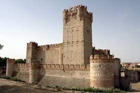Castillo de Peñafiel
El castillo de Peñafiel es un castillo ubicado en la localidad vallisoletana de Peñafiel (España), que se alza sobre una loma estrecha y larga que le proporciona la característica de tener la forma de un buque. Fue declarado Monumento Nacional el 1 de junio de 1917. Es propiedad del Ayuntamiento de Peñafiel.
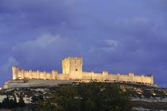Castillo de Simancas
El castillo de Simancas se encuentra en la localidad española de Simancas, en la provincia de Valladolid. Desde 1540 es sede del Archivo General de Simancas (también conocido por sus siglas, AGS) es un archivo estatal español ubicado en la localidad vallisoletana de Simancas, muy próxima a la capital. Fundado por Carlos I en 1540 en el castillo de Simancas, es el primer y más antiguo archivo oficial de la corona de Castilla.1 El edificio, construido por Juan de Herrera, conserva gran parte de la documentación producida por los órganos de gobierno de la corona de Castilla y posteriormente de la Monarquía Hispánica y del Reino de España hasta Isabel II.
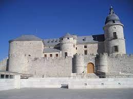Ir arriba
NATURALEZA
Reserva natural de las Riberas de Castronuño-Vega del Duero
En la comarca de los Montes Torozos, Es una zona de páramos y vegas sedimentadas. Una zona migratoria y nidificación, para las aves acuáticas. El Duero está rodeado de bosques de ribera y constituye un ecosistema palustre muy interesante. Es una zona de grandes praderas y ausencia de grandes elevaciones. La fauna es abundante, como garza real, martinete, garceta común, culebras, patos cucharas, porrores comunes, porrones moñudos, cormoranes, albotán, águila pescadora, culebra de collar, águila de escalera, garza imperial, halcón peregrino, lagartijas cenicienta y colirroja, lagarto ocelad, ranita de San Antonio, sapos parteros, turón, tejón.

Lagunas del Raso de Portillo
Se trata de tres lagunas de reciente construcción situadas sobre lo que había sido un humedal histórico que llegó a alcanzar las 1900 hectáreas hasta que fue desecado en el siglo XIX. Es un lugar privilegiado para observar gran cantidad de aves que habitan en los humedales o que están de paso en su etapa migratoria.
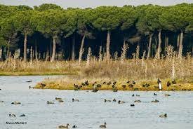Canal de Castilla
Se empezó a construir en 1753 y se tardó casi un siglo en finalizarlo ya que fue inaugurado en 1849. Tiene forma de "Y" invertida y su objetivo era el transporte del trigo de Castilla hacia los puertos del Mar Cantábrico pero la llegada del ferrocarril pronto le hizo quedar obsoleto. Atraviesa 9 municipios de la provincia. Con el paso del tiempo, en los márgenes del canal se han ido formando una serie de humedales de alto valor ecológico, que representan una isla de biodiversidad. Su alto valor ecológico está relacionado con su diversa vegetación acuática y con el importante número de especies vertebradas que albergan. Dentro de las aves, en el Canal hay 121 especies de aves nidificantes y también aves invernantes y aves migradoras y accidentales; 42 especies de mamíferos, 15 de ellas insectívoros; 11 especies de anfibios y 14 de reptiles y 14 especies de peces.
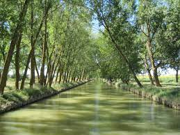Ir arriba
TRADICIONES
Fiestas de Nuestra señora y San Roque
La gran diferencia que tiene Peñafiel con el resto de los municipios que realizan fiestas de toros, es su plaza. La mítica Plaza del Coso, hace que las Fiestas de San Roque sean inigualables.
Los festejos taurinos tan arraigados en la villa congregan a gran público de muchos lugares. Sin duda alguna, son sus capeas, con un toro por dentro y otro por fuera del ruedo, hace de estos festejos únicos.
Del 14 al 18 de agosto Peñafiel celebra con júbilo la festividad de sus patrones. Entre las actividades que se desarrollan hay que destacar los encierros, novilladas, además del Chúndara. Todo ello acompañado de charangas que ocupan las calles animando con su música y transformando el ambiente en un gran encuentro popular.

Procesoin civica El Vitor
En Mayorga se celebra anualmente la fiesta de El Vítor con una procesión que recrea la llegada en 1737 de las segundas reliquias de Sto. Toribio de Mogrovejo a su localidad natal, donde nació en 1538. Fue un misionero y organizador de la Iglesia católica en el virreinato del Perú (segundo arzobispo de Lima).
La llegada de las reliquias del santo patrón fueron honradas por los mayorganos que las procesionaron portando teas y antorchas.
Actualmente, se rememora aquel día al anochecer, cuando los vecinos se congregan con ropas viejas, sombreros de paja y guantes para protegerse de la pez de los pellejos ardiendo en la procesión religiosa para honrar a Santo Toribio.
La procesión del Vítor comienza frente a la ermita del santo, donde se prenden en una hoguera algunos de los cientos de pellejos que van colgados en los varales. A lo largo de la procesión, se irán prendiendo el resto, hasta llegar a cerca de mil.
En esta fiesta las calles se llenan de fuego y humo, con los pellejos ardiendo, en un mágico rito en el que lo religioso se mezcla con lo pagano en un secreto deseo purificador de quemar el pasado, pero también de diversión. Se porta el Vítor, un estandarte que se entregaba a los estudiantes doctorados en la Universidad de Salamanca, y en el que se recoge el nombre del Santo y su lugar de nacimiento, Mayorga. La procesión termina a medianoche, al llegar a la ermita de Santo Toribio.
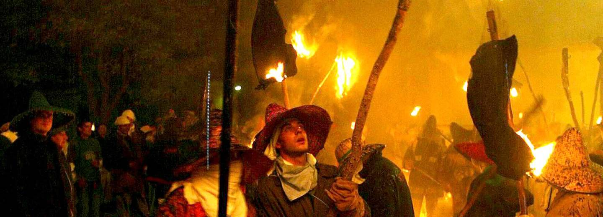La bajada del Angel
Los documentos más antiguos que se refieren a esta representación datan de finales del siglo XVIII, aunque ya en los mismos se indica que la tradición de La Bajada del Ángel es mucho mayor, posiblemente sea una evolución de los Autos Sacramentales del Medievo. La bajada se escenifica al mediodía del Domingo de Resurrección en la legendaria Plaza del Coso. La ceremonia comienza cuando campanas y cohetes anuncian la salida de la procesión de la iglesia de Santa María. La imagen de la Virgen aparece cubierta con un manto negro y es acompañada por los cofrades, mayordomos y fieles, quienes se dirigen a la Plaza del Coso, donde hay dos torres unidas con sendas cuerdas, la imagen enlutada de la Virgen se sitúa debajo de ellas, y en ese momento aparece una esfera, en la que al abrirse emerge un ángel, que por un sistema de poleas desciende sobre la cabeza de la Virgen. Un niño vestido con hábito blanco y coronado se convierte en el ángel que va a revelar a María el Misterio de la Resurrección. Mientras desciende suelta dos palomas y cuando llega a la altura de la Virgen le quita su velo de luto y asciende de nuevo a los cielos, mientras la plaza aplaude la Resurrección, el "niño ángel" comienza un pataleo de júbilo. También puede verse la "Probadilla de la Bajada del Ángel" el Sábado Santo.
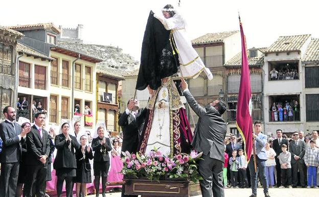Ir arriba
OTROS ASPECTOS DE INTERES
Gastronomia
La gastronomía de la provincia de Valladolid es típicamente castellana, aunque con algunas variaciones. La región norte de Tierra de Campos es conocida por la producción de quesos de leche de oveja, en particular el queso de Villalón (queso de Villalón), añejo o semicurado. También son comunes las sopas de ajo, los cocidos a fuego lento (cocidos) y las lentejas guisadas (Lenteja pardina). En el ámbito de la repostería, destacan el Mantecado de Portillo y las tradicionales almendras garrapiñadas, especialidad de Medina de Rioseco.
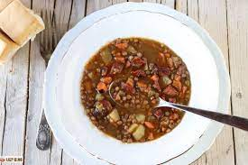 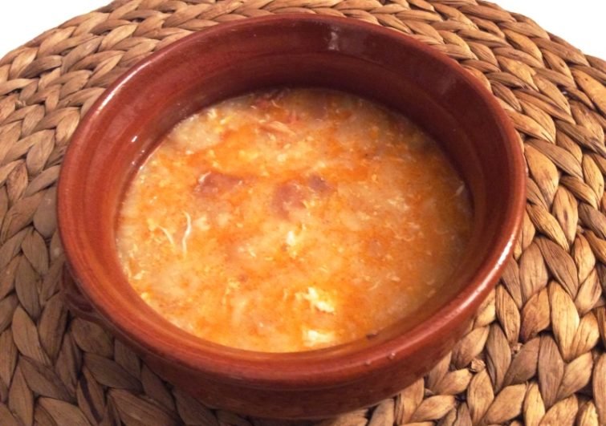Fauna
En general, animales típicos que tienen de hábitat la meseta, como: el conejo, ardilla, erizo, topillo campesino, perdiz, avutarda, zancuda, pico picapinos, sisón, golondrina, petirrojo, cuco, ruiseñor, paloma, urraca, pato, oca, gorrión cigüeña, rana común, sapo, sapo corredor, galápago, lagartija, salamanquesa, garza real, garza imperial, garza, águila, águila real, musaraña, ciervo, gamo, aguilucho cenizo, aguilucho lagunero, aguilucho pálido, halcón peregrino, águila culebrera, cernícalo primilla, grulla, ganga común, murciélago ratonero, trucha, carpa, cangrejo de río, nutria, musaraña, liebre, corzo, jabalí, zorro, lobo, gorrion molinero, ganso, pavo real
 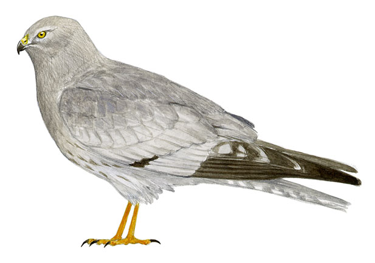
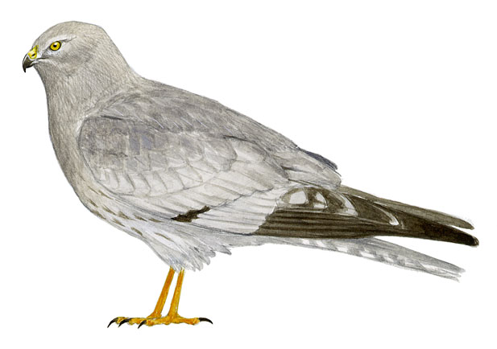
Sonido Ardillas
Flora
Vegetación reducida al monte alto, con distintas especies de pinos (pinus pinea y pinus pinaster), encinas (quercus ilex), robles (quercus pyrenaica y Quercus faginea), alcornoque (quercus suber), olmos, chopos, fresnos, sauces, alisos, álamos, madreselvas carrizos, espadañas, matorral y pastizales.
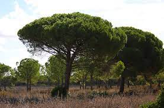 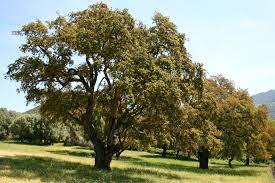